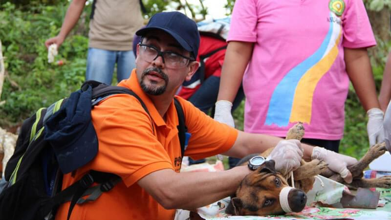
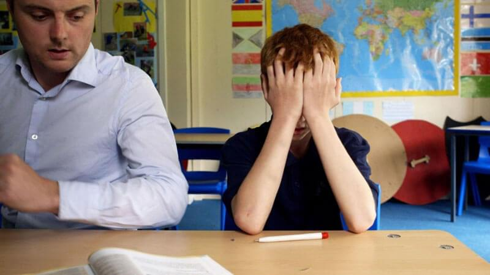

It's been a busy week at tpr as not one but three of the projects we've been working on went to air in short succession. My Brother the Terrorist, broadcast on BBC Three at 9pm on Monday 28 April, followed Robb Leech's attempt to understand his stepbrother's journey from middle-class boy to convicted terrorist. Exploring what drives young British-born men and women into radical jihadism, the documentary brought fresh provocative new insights on a vitally important story for modern Britain. The programme received critical acclaim with the Guardian selecting it for their 'watch this' slot and the Telegraph highlighting it as their 'digital choice'. It was also 'TV choice' in the Metro and 'satellite choice' in the Daily Mail. With its thought-provoking, and at times shocking subject matter, My Brother the Terrorist was a fascinating project to work on. We hope the success and reach of Robb's documentary, which was a year in the making, will continue to increase understanding of radicalisation in Britain and prompt the search for solutions.
Also at 9pm on Monday 28 April, Vets in the Disaster Zone broadcast on BBC Two. This documentary followed Michael Mosley as he travelled to the Philippines in the aftermath of the 2013 Typhoon Haiyan to explore the disaster from a completely fresh perspective – that of the animals caught up in the crisis and a specialist team of vets who work to save their lives and those of the people who depend on them. Amid the devastation, Michael learnt about the little-known work these experts do, both in the short term by providing immediate veterinary care to thousands of animals and in the long term, by using their skills to develop pioneering technology that could help save millions of animals the next time a disaster strikes. Vets in the Disaster Zone was highlighted as 'Critics Choice' in the Daily Mail, i and Independent as well as the Guardian, The Sun and the Daily Express. The WSPA's Director of Disaster Management James Sawyer was interviewed on BBC Radio 4's Midweek(http://bbc.in/1rM24H3) while Michael Mosley authored a piece for the Mail Online (http://dailym.ai/1fllUJf). We greatly enjoyed working with Michael and the WSPA, learning what motivates the team to travel to some of the most dangerous and challenging places on earth to help animals.
Next up, Channel 4's Last Chance School hit screens at 10pm on Tuesday 29 April. This observational documentary visited Muntham house School in West Sussex, home to some of the toughest to teach children in the country. Almost 60 boys, who were previously excluded from their local schools, attend this specialist boarding facility, having been expelled in the past mostly because of violent and abusive behaviour. But Principal Richard Boyle works hard with his team to inspire the boys to achieve more and live better. Filmed from the boys' perspective by director, Marc Williamson, Last Chance School is part of Channel 4's First Cut strand and is based on Boys – Williamson's award-winning student film. Both the Times and the Mail gave The Last Chance School four stars and it was 'TV Choice' in both the Metro and The Sunday Times. The Independent, i and the Daily Mail selected it as 'Critics Choice', it was highlighted by Closer as 'Amazing Real Life' and 'Don't Miss' by Total TV Guide. Additionally it was The Sunday Telegraph's 'Today's Highlight' and on TV and Satellite Weeks 'Hot List'. The determination of Richard and his team to help his pupil's turn their lives around was compelling viewing and working with him was inspirational.
But it's not over yet! Next week Tearing Up History is on BBC Four on Tuesday 6 May at 9pm as part of BBC Four's 18th Century Season. This documentary explores for the first time the dramatic and destructive years of the French Revolution through the extraordinary story of its art. In his TV debut, art historian Dr Richard Clay controversially argues that the destruction of art can be every bit as powerful as its creation. Examining vandalism as a political tool from Ancient Rome to modern day graffiti, Clay is a charismatic narrator and we can't wait for transmission!